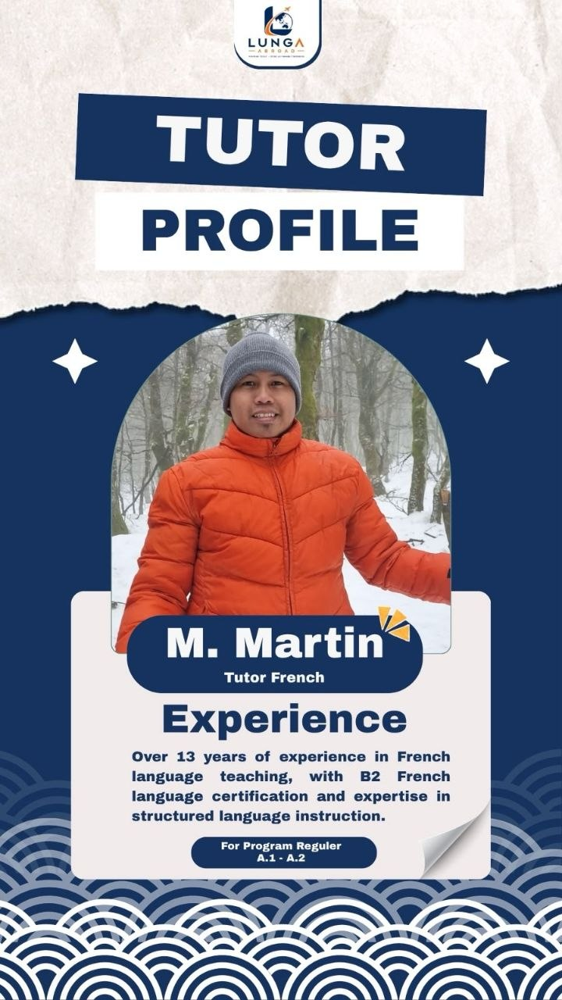
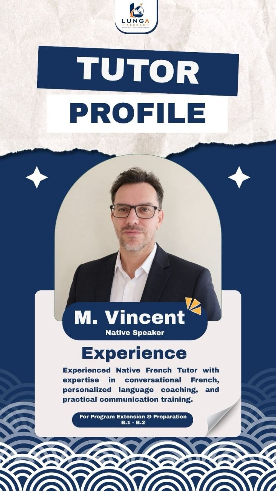
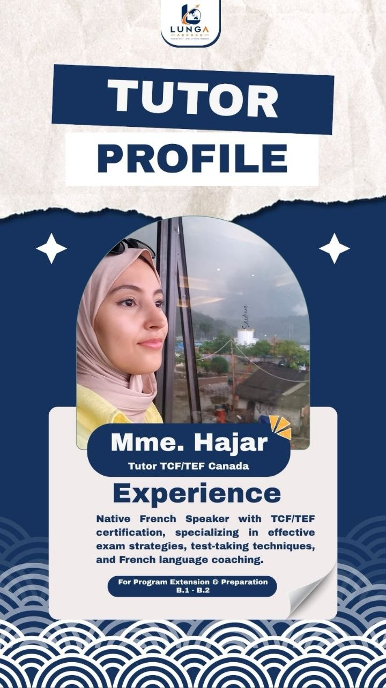
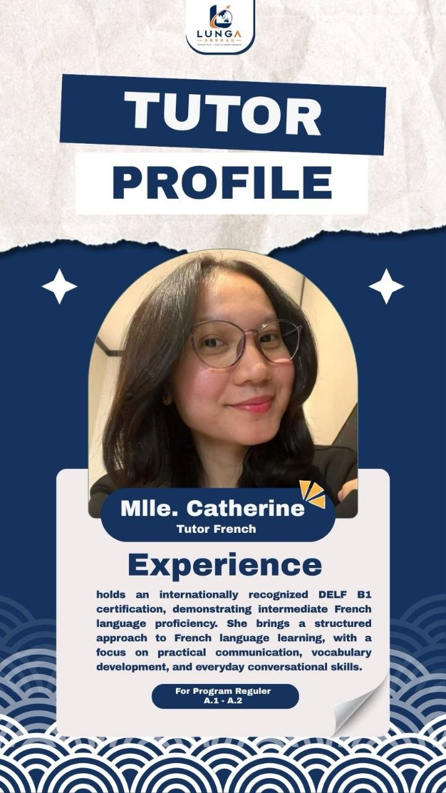

Jalur kerja
Francophone Mobility
Persiapan bahasa Prancis dan pendampingan untuk memahami proses menuju peluang kerja di Kanada.
Pelajari Francophone MobilityBelajar bahasa · Rancang masa depan
Kelas bahasa Prancis, persiapan ujian TCF/TEF Canada dan membimbingmu dari langkah pertama sampai pintu keberangkatan.
Pilihan program
Pilih jalur persiapan yang sesuai dengan Impianmu. Kami bimbing memahami langkah awalnya.
Jalur kerja
Persiapan bahasa Prancis dan pendampingan untuk memahami proses menuju peluang kerja di Kanada.
Pelajari Francophone MobilityJalur imigrasi
Persiapan bahasa dan ujian sebagai bagian dari rencana menuju jalur Express Entry dan permanent residence.
Pelajari jalur Express EntryPilihan kelas
Mulai dari fondasi bahasa hingga persiapan ujian, pilih format belajar yang paling sesuai.
Geser untuk melihat program lainnya
Fondasi bahasa
Kurikulum A1–A2 dengan tutor berpengalaman, materi digital, latihan empat keterampilan, dan rekaman kelas. Tersedia kelas pagi atau malam.
3 bulan66 sesi weekday atau 12 sesi Sabtu
Lihat detail programPengembangan level
Kurikulum Refreshment A2 hingga Mastering B1 dengan latihan empat keterampilan, simulasi TCF/TEF, feedback tutor, dan dukungan persiapan karier.
3 bulan66 sesi weekday atau 12 sesi Sabtu
Lihat detail programFokus ujian
Private Preparation untuk peserta minimal B1: latihan TCF/TEF, simulasi wawancara kerja, serta bimbingan CV dan karier.
1 bulan26 sesi ·
Lihat detail programKelas privat
Kelas 1-on-1 A1–A2 atau B1 Mastering dengan tutor, materi terstruktur, feedback, dan waktu kelas yang fleksibel.
2 bulan52 sesi · 2 jam per sesi
Lihat detail programKelas grup kecil · 3-4 orang
Belajar A1–A2 atau B1 Mastering dalam grup kecil dengan kurikulum terstruktur, tutor berpengalaman, dan jam kelas fleksibel.
2 bulan52 sesi · 3-4 peserta
Lihat detail programProses bimbingan
Kamu tidak harus mengetahui semua jawabannya dari awal. Kita susun langkahnya bersama, satu tahap demi satu tahap.
Ceritakan tujuan, pengalaman, dan rencana yang kamu miliki. Dari sana kita petakan kemungkinan langkah awal.
Mulai dari level yang sesuai dan belajar bertahap menuju target bahasa yang dibutuhkan untuk rencanamu.
Kenali format TCF Canada atau TEF Canada dan persiapkan kemampuan bahasa yang akan diujikan.
Susun persiapan lanjutan bersama tim, sesuai jalur dan kondisi masing-masing peserta.
Tentang Lunga Abroad
Lungaabroad adalah platform edukasi dan bimbingan persiapan bahasa Prancis serta bimbingan karir menuju Kanada. Kami membantu peserta memahami pilihan program, membangun kemampuan bahasa, dan menyiapkan langkah berikutnya dengan lebih terstruktur.
Kenali langkah pertamamuFokus pendampingan
Pembelajaran bertahap dari A1 sampai B2.
Pengenalan dan latihan untuk TCF Canada atau TEF Canada.
Pemetaan langkah sesuai tujuan dan kondisi peserta.
Tim pengajar
Kenali pengajar yang akan mendampingi proses belajarmu. Detail profil dan pengalaman dapat disesuaikan dengan informasi terbaru.

Tutor bahasa Prancis
Mendampingi peserta membangun fondasi bahasa dan kepercayaan diri untuk berkomunikasi.

Tutor bahasa Prancis
Membantu peserta berlatih bahasa Prancis secara bertahap sesuai tingkat dan tujuan belajar.

Tutor bahasa Prancis
Mendampingi latihan bahasa dan persiapan peserta menuju target pembelajaran berikutnya.

Tutor bahasa Prancis
Membimbing peserta mengembangkan keterampilan bahasa untuk kebutuhan belajar dan ujian.
Kegiatan Lunga Abroad
Beberapa cuplikan kegiatan berbagi informasi dan belajar bersama komunitas.

01 / 04
Webinar Francophone Mobility Canada
Sharing & Tips
Panduan singkat untuk membantu memahami bahasa Prancis dan persiapan menuju Kanada.
Kenali kemampuan awalmu agar rencana belajar terasa terukur dan tidak terburu-buru.
Diskusikan level awalTCF Canada dan TEF Canada memiliki format masing-masing. Pastikan pilihanmu sesuai kebutuhan.
Baca pertanyaan umumMulai dari tujuan, kemampuan bahasa, dan informasi resmi yang relevan dengan rencana pribadi.
Lihat tahapan bimbinganInformasi program dan persyaratan dapat berubah. Periksa selalu ketentuan terbaru dari sumber resmi.
News Update
Ringkasan berita dan hasil draw dari sumber resmi IRCC. Buka sumber untuk membaca detail lengkap.

IRCC mengumumkan poin untuk pengalaman kerja Kanada yang memenuhi syarat atau tawaran kerja tertentu di bidang upah tinggi. Perubahan berlaku mulai 3 November 2026.
Baca rilis IRCC
Pemerintah Kanada mengumumkan dukungan bagi proyek yang menghubungkan talenta Francophone dan bilingual dengan kebutuhan komunitas serta tenaga kerja.
Baca rilis IRCC
Aturan baru menetapkan sanksi bagi pihak yang melanggar ketentuan saat memberi nasihat imigrasi berbayar. Periksa status perwakilan sebelum membayar layanan.
Baca rilis IRCC
IRCC mengeluarkan 5.000 undangan. CRS terendah yang diundang: 407. Hasil draw adalah catatan historis, bukan jaminan hasil berikutnya.
Lihat instruksi resmi
IRCC mengeluarkan 5.000 undangan. CRS terendah yang diundang: 435. Kategori ini memiliki persyaratan tersendiri; lihat instruksi draw untuk rinciannya.
Lihat instruksi resmiRingkasan untuk informasi umum, bukan nasihat imigrasi atau jaminan kelayakan. Persyaratan kategori French-language proficiency termasuk hasil minimal NCLC 7 pada tiap kemampuan bahasa; selalu verifikasi ketentuan resmi terbaru.
Punya pertanyaan?
Belum menemukan jawaban yang kamu cari? Hubungi kami untuk membicarakan rencana belajarmu.
Tanya langsungTidak selalu. Pilih program dan level awal berdasarkan kemampuanmu. Konsultasi awal dapat membantu memetakan langkah belajar yang sesuai.
Keduanya merupakan ujian bahasa Prancis dengan format dan penyelenggara yang berbeda. Tanyakan kepada tim kami untuk membahas persiapan ujian sesuai rencanamu, lalu cek ketentuan terbaru dari sumber resmi.
Tidak. Hasil kerja, izin, dan keputusan imigrasi bergantung pada persyaratan serta keputusan pihak terkait. Bimbingan berfokus pada pembelajaran dan persiapan sesuai layanan yang disepakati.
Mulailah dengan konsultasi. Ceritakan kemampuan bahasa, tujuan, dan rencanamu agar tim dapat membantu menjelaskan pilihan program.
Tidak ada batasan umur yang tercantum secara resmi di website IRCC terkait umur jalur Francophone mobility.
Tentu!, program Francophone Mobility memiliki peluang untuk membawa keluarga, pasangan dan anak.
Tidak ada biaya yang harus di bayarkan untuk proses imigrasi dan terkait job terhadap Lunga abroad.
Mulai percakapan
Isi formulir singkat ini. Tombolnya akan membuka WhatsApp dengan ringkasan pesan yang bisa kamu periksa sebelum dikirim.
Lungaabroad.id adalah platform edukasi dan bimbingan persiapan bahasa Prancis dan Kanada.